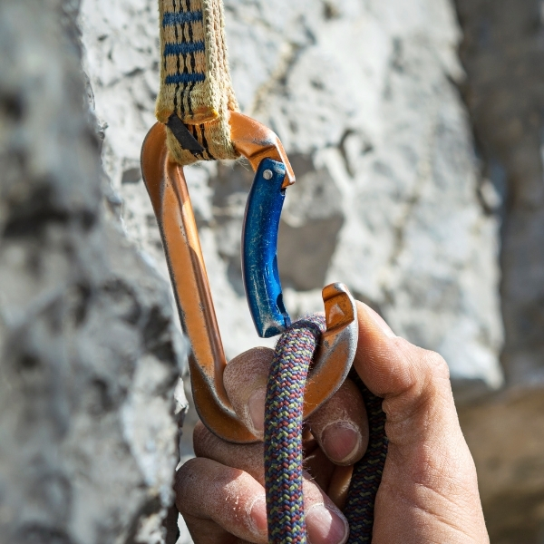

This is a type of rock climbing that is stripped down to the raw essentials. In bouldering, climbers do not use ropes and harnesses. All you need are climbing shoes, a bag of chalk and a crash pad. It is great for beginners, and seasoned pro’s alike due to its’ system of graded climbing. Another benefit for beginners is that learning about knots, anchoring, belaying techniques, or even helmets is not required. Bouldering involves short but tricky bouldering ‘problems’ (a route, or sequence of moves) using balance, technique, strength as well as problem solving skills. Since bouldering does not require much experience or equipment, it is highly accessible and a great entry point into rock climbing for new climbers.
Top-Roping
Top-Roping
Top rope climbing (or top roping) is a form of climbing where the climber is securely attached to a rope which then passes up the rockface, through an anchor system at the top of the climb and down to a belayer (person who controls the rope), at the foot of the climb. The belayer takes in slack rope throughout the climb so to minimise the fall distance of the climber should they lose their hold.
Top-roping is often done on routes that cannot be lead climbed (see below) for one reason or another. Most top-rope anchors can be reached through non-technical means, such as by hiking or scrambling (a walk-up steep terrain involving the use of one's hands) to the top of the cliff. It is the most common style used at indoor climbing walls and is also used in situations where climbing styles would be environmentally damaging. For example, where the rock type is soft and prone to erosion.
Lead-Climbing
Sport-Climbing
Sport climbing relies on fixed bolts for protection along a predefined route. The lead climber ascends the route with the rope tied to their harness, clipping into each bolt or quickdraw to protect against a fall. In indoor climbing gyms, quickdraws (two non-locking carabiners connected with webbing) are pre-placed on the bolts so that a lead climber only must clip the rope in as they ascend the route. It can be a very demanding style of climbing, especially in the early learning stages. It is common for climbers to tire out quickly while learning how to clip their rope in along the route. However, the intense nature of sport climbing adds an alluring dimension for more seasoned climbers. This type of climbing is considered a great steppingstone into traditional climbing (see below).
Traditional-Climbing
Traditional (or trad) climbing, is a style of rock climbing in which a climber or group of climbers carry and place protection (chocks, camming devices etc..) against falls as they climb, rather than clipping into preplaced bolts. The protective equipment is then removed when a pitch is complete. It differs from sport climbing in that sport-climbing focuses almost entirely on physical challenges, while trad climbing involves a significant mental aspect. The traditional climber must practice route-finding, whereas a sport climber follows the bolts up a particular route. Trad climbing was simply known as ‘climbing’ up until fairly recently when sport climbing became prominent and the name trad-climbing was created to distinguish the two styles.
Indoor Climbing
Indoor Climbing
Indoor climbing involves the use of an artificially constructed climbing wall, with grips for hands and feet. The climbing surface is covered with textured products including concrete and paint or polyurethane loaded with sand to mimic the experience of climbing on organic rockfaces. In addition to the textured surface and hand holds, the wall may contain surface structures such as indentions (incuts) and protrusions (bulges), or take the form of an overhang, underhang or crack. A wall may have places to attach belay ropes for top-roping but may also be used to practice lead climbing or bouldering. The major benefit of climbing walls is that they provide the opportunity to climb regardless of the weather conditions. Due to the wide range of climbing styles and routes offered by climbing walls, indoor climbing can be equally enjoyable and challenging for absolute beginners to seasoned pros. Ireland has a host of indoor climbing facilities which you will find in our ‘indoor gyms’ section.
Climbing 101
Glossary
Below is an image gallery of common rock climbing terms. Hover over each of them to find out what they are called and read a brief description.
Belaying
Belaying is a variety of techniques used to create friction within a climbing system, in particularly on a climbing rope, to minimise the distance a climber may fall.
Brake Hand
The dominant hand, used to prevent the rope from sliding unchecked through a belay device. When you belay, the brake hand never lets go of the rope.
Cam
A spring-loaded device used for protecting climbers from falls. The device is inserted into gaps in the rock and connected to a sling and carabiner. The pulling forces prevent the removal of the device from the rock.
Campusboard
A campus board is a training tool that has been widely adopted to improve rock climbing performance. Typically, a user ascends or descends the campus board using only their hands.

Carabiner
A loop of metal (oval, D-shaped or pear-shaped) that has a spring-loaded gate on one side. Used to connect various items of climbing gear.
Chalk Bag
A small bag of chalk used to keep your hands dry when climbing. It is usually closed with a drawstring and is worn on the back of a climbing harness or waist belt.
Climbing Bolts
A permanent anchor fixed into a rock formation. Bolts are used in sport climbing as a backup to catch a fall, but not to aid ascent. In aid climbing, they can be used to aid ascent.
Climbing Nut
A metal wedge threaded on a wire which is used for protection by wedging it into a crack in the rock. Quickdraws are clipped to the nut wire by the ascending climber and the rope threads through the quickdraw. Nuts come in a variety of sizes and styles.
Climbing Shoes
A special type of footwear designed for rock climbing. They have a close fit, little if any padding, and a smooth, sticky rubber sole with an extended rubber rand. Unsuited to walking and hiking, climbing shoes are typically donned at the base of a climb.
Crash Pad
A bouldering mat or crash pad is a foam pad used for protection when bouldering. Bouldering mats help prevent climbers from becoming injured when falling from short heights. Bouldering mats are made in various sizes and styles.
Crimp
Crimp holds are small holds that only have enough space for fingertips. These holds are usually on more advanced climbs. Due to the amount of tension in your finger and hand tendons, they are one the most common types of holds that can cause injury.
Figure of 8 Knot
A highly secure knot used to secure the climber to their climbing rope via the climbing harness. The knot tightens as it is loaded with weight and is woven in the shape of a figure of 8.
Grigri
Made by Petzl, Gri-gri is the name given to an auto-locking belay device that acts to catch a climbers fall.
Harness
A strong belt made of webbing that has attached leg loops and a secure buckle. Climbers wear a harness and attach themselves to the rope using a figure of 8 knot that is tied through the harness. Belayers also need to wear a harness to secure the belay device.
Jug
A large handhold that is usually very secure and deep, making it easy for the climber to hold onto it with confidence.
Overhang
A rock face or artificial climbing wall with a slope of more than 90°, which slopes beyond the vertical. Particularly severe overhangs that reach, or nearly reach, the horizontal, are referred to as a roof.
Quickdraw
A quickdraw (also known as an extender) is a piece of climbing equipment used to allow the climbing rope to run freely through bolt anchors or other protection while leading. A quickdraw consists of two carabiners connected by a semi-rigid material.
Spotter
A technique, especially in bouldering, where the climbers are close to the ground and ropes are not typically used. If the climber falls, the spotter does not catch the climber, but redirects the climber's fall so that they land safely. The spotter should stand with their fingers together (known as "using spoons") to avoid broken fingers.
Climbing Grade Systems
Climbing grades are not written in stone (no pun intended..), and far from a science, but they provide a very good estimate as to what route or boulder problem is best suited to the climber. Grades, based on a given scale, are usually set by the first person (and their peers) to successfully climb a given route or a bouldering problem ("a first ascent"). As grades vary, so do a climber's skill-set. What might be a weak area for one, might be a strong point for another. This is something climbers, especially beginners, should be conscious of when weighing one's skillset up against the grading system in a climbing gym or outdoors. Grading systems themselves have evolved in parts of the world that are well-known climbing destinations, with a rich history of the sport. The first official climbing grading system was established in Germany in the late 1800s, though many have spawned up around the globe since then. Nowadays there is a diverse range, with some systems being used more than others depending on the corner of the globe you are in. For example, in Ireland, we mainly use the french 'Font' system, the English system, and the V-system. There are systems for different types of climbing too, some are similar, others not.
See below an example of the 3 main systems used in Irish climbing. (For more on this, visit our resources section).
Conversion Chart for grading systems commonly used in Ireland
Level
Vermin
Font
British
Beginner level
V0
5a
4b
-
5b
4c
-
5c
5a
-
6a
5b
-
5b
Intermediate level
-
6b
5c
-
5c
V1
7a
5c
V2
6a
V3
7b-
6a
V4
7b
6b
Advanced level
V5
7b+
6b
V6
7c
6b
V7
7c-
6b
V8
7c+
6c
V9
8a
6c
V10
8a+
7a
V11
8b
7a
Pro level
V12
8b+
7a
V13
8v
7a
V14
8c+
7b
V15
9a
7b
V16
9a+
7c
V17
9b-
7c
V18
9b
8a
V19
9b+
8a
Video Tutorials
Rock Climbing for Beginners
Introduction to Bouldering
Finger Warm Ups
General Warm Ups
Fitting a Harness
Congratulations, you have covered the whole of the learning section. We hope you feel more confident about going out and getting started in rock climbing. Why not visit our Indoor Gyms page where you'll find a list of indoor climbing centres in Ireland. Also, if you enjoyed learning about rock climbing, we'd appreciate you sharing this page on Facebook or Twitter.